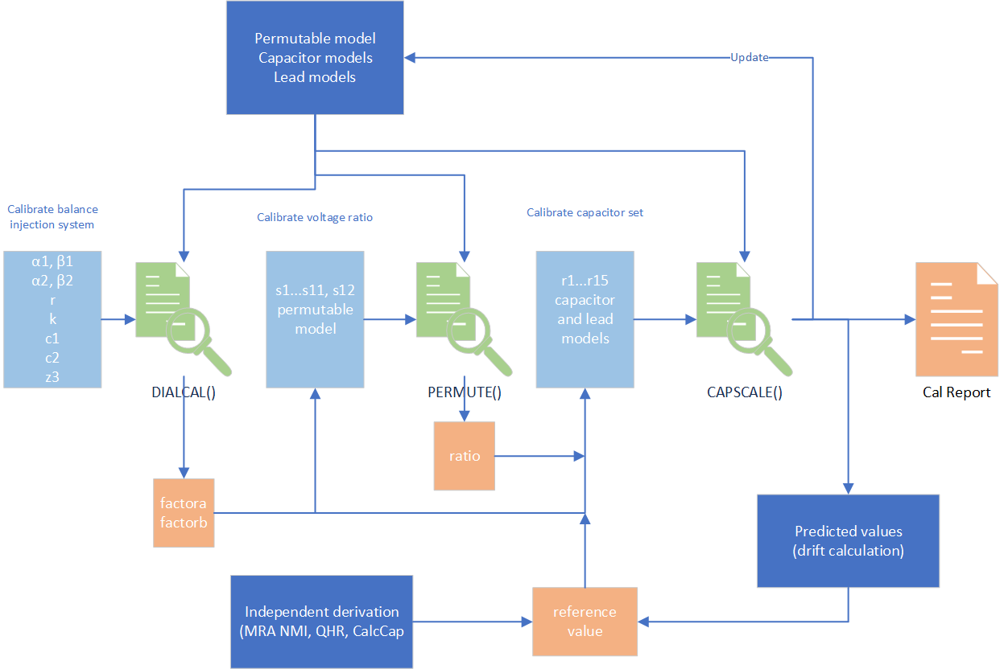

Capacitance Scale Project¶
This software supports technical procedure ‘E.005.003: Establishing the MSL Capacitance Scale’ which describes all the technical processes and measurement models. At this stage the software does not include environmental sensitivities (temperature and pressure) and manages only a single prescribed set of measurements to establish the capacitance scale from 0.5 pF to 1000 pF. Extending the classes to provide this extra functionality should not be too difficult.
Assuming that the user is following the steps described in E.005 these instructions show how to enter the manually gathered data for processing. The figure below is an overview that shows where data is gathered (light blue boxes) for processing in the Python classes (light green) supported by additional information in the dark blue boxes. Traceable output values are captured in the orange boxes.
File Naming Convention¶
All data is entered as .csv files and it is essential to adopt a naming convention so that there is no ambiguity about which data has been used to produce a calibration report. The generic names for data should be
Main dial calibration: dialcal_in, dialcal_out.
Ratio calibration: ratiocal_in, ratiocal_out.
Capacitor set calibration: capcal_in, capcal_out.
Each of these is labelled with a date YYYY-MM-DD_alpha so that, for example, we might have ‘ratiocal_in_2020-12-02_b.csv’ as the set of dial readings for calibrating the 10:1 voltage ratio. Additionally, we have less frequently updated component files that are used for calculation.
Permutable capacitor: comp_permute
Set of capacitors and leads: comp_leads_caps
Reference value for AH11C1: reference_val_YYYY-MM-DD
Then there are the calculation runs that allow the selection of any combination of input data files to create a set of results for a capacitance scale buildup. The onus for selecting a sensible combination of input data files (i.e. making physical sense) rests with the operator. The processing of file collections is done with
The input set: main
Corresponding summary: summary_main
For example we would list the selected inputs in ‘main_2021-08-13_e.csv’ and produce a summary in ‘summary_main_2021-08-13_e.csv’
Manual Input¶
All the csv files that will be used for input and output of complete capacitance scale calculation are included in a main_YYYY-MM-DD.csv file. Note that the output file names are generated automatically by the program and the manual entry needs to match (can automate this once we are sure the naming system is fit-for-purpose).
Working directory,G:\My Drive\KJ\PycharmProjects\CapacitanceScale\new_datastore
Dial input,dialcal_in_2019-10-16_a.csv
Dial output,dialcal_out_2019-10-16_a.csv
Permutable,comp_permute_2019-11-15.csv
Ratio input,ratiocal_in_2019-11-15.csv
Ratio output,ratiocal_out_2019-11-15.csv
Scale input,capcal_in_2019-11-15.csv
Scale output,capcal_out_2019-11-15.csv
Leads and caps,comp_leads_caps_2019-10-16.csv
Reference,reference_val_2021-08-24.csv
All the input files are structured by example.
For calibrating the dials, dialcal_in_2019-10-16_a.csv, which somewhat clumsily enters the values direct into dictionary strings.
Date,16 October 2019
Reference,KJ Lab Diary2 p.107
w,1e4
alpha1,"{""x"": 1.000098, ""u"": 2e-06, ""df"": Infinity, ""label"": ""alpha1""}"
beta1,"{""x"": -0.000704, ""u"": 2e-06, ""df"": Infinity, ""label"": ""beta1""}"
alpha2,"{""x"": -0.000130, ""u"": 2e-06, ""df"": Infinity, ""label"": ""alpha2""}"
beta2,"{""x"": 0.999970, ""u"": 2e-06, ""df"": Infinity, ""label"": ""beta1""}"
r,0.01
k,0.2000000
c1,es14
c2,gr1000b
z3,"{""xreal"": 99724.19, ""ximag"":1.4e-10, ""u"": [0.1, 5e-15], ""v"": [0.01, 0.0, 0.0, 2.5e-29], ""df"": Infinity, ""label"": ""100k4""}"
The values of capacitors c1 and c2 are found in comp_leads_caps_2019-10-16.csv that is created by create_component.py by manually entering values into its code.
Leads
hv1,"{""relu"": 0.05, ""w"": 10000.0, ""label"": ""ah11hv1"", ""z"": ""{\""xreal\"": 0.286, \""ximag\"": 0.00782, \""u\"": [0.0143, 0.00039100000000000007], \""v\"": [0.00020449000000000002, 0.0, 0.0, 1.5288100000000006e-07], \""df\"": Infinity, \""label\"": \""ah11hv1 z\""}"", ""y"": ""{\""xreal\"": 2.8e-10, \""ximag\"": 2.552e-06, \""u\"": [1.4000000000000002e-11, 1.276e-07], \""v\"": [1.9600000000000004e-22, 0.0, 0.0, 1.628176e-14], \""df\"": Infinity, \""label\"": \""ah11hv1 y\""}""}"
hv2,"{""relu"": 0.05, ""w"": 10000.0, ""label"": ""ah11hv2"", ""z"": ""{\""xreal\"": 0.16, \""ximag\"": 0.0083, \""u\"": [0.008, 0.000415], \""v\"": [6.4e-05, 0.0, 0.0, 1.72225e-07], \""df\"": Infinity, \""label\"": \""ah11hv2 z\""}"", ""y"": ""{\""xreal\"": 3e-10, \""ximag\"": 2.606e-06, \""u\"": [1.5e-11, 1.3030000000000002e-07], \""v\"": [2.25e-22, 0.0, 0.0, 1.6978090000000007e-14], \""df\"": Infinity, \""label\"": \""ah11hv2 y\""}""}"
lv1,"{""relu"": 0.05, ""w"": 10000.0, ""label"": ""ah11lv1"", ""z"": ""{\""xreal\"": 0.302, \""ximag\"": 0.00616, \""u\"": [0.0151, 0.000308], \""v\"": [0.00022801, 0.0, 0.0, 9.486400000000001e-08], \""df\"": Infinity, \""label\"": \""ah11lv1 z\""}"", ""y"": ""{\""xreal\"": 2e-10, \""ximag\"": 9.36e-07, \""u\"": [1.0000000000000001e-11, 4.68e-08], \""v\"": [1.0000000000000002e-22, 0.0, 0.0, 2.1902400000000003e-15], \""df\"": Infinity, \""label\"": \""ah11lv1 y\""}""}"
lv2,"{""relu"": 0.05, ""w"": 10000.0, ""label"": ""ah11lv2"", ""z"": ""{\""xreal\"": 0.273, \""ximag\"": 0.011009999999999999, \""u\"": [0.013650000000000002, 0.0005505], \""v\"": [0.00018632250000000006, 0.0, 0.0, 3.0305025e-07], \""df\"": Infinity, \""label\"": \""ah11lv2 z\""}"", ""y"": ""{\""xreal\"": 3.6e-10, \""ximag\"": 1.6979999999999999e-06, \""u\"": [1.8000000000000002e-11, 8.49e-08], \""v\"": [3.240000000000001e-22, 0.0, 0.0, 7.20801e-15], \""df\"": Infinity, \""label\"": \""ah11lv2 y\""}""}"
xfrm,"{""relu"": 0.05, ""w"": 10000.0, ""label"": ""100 to 1"", ""z"": ""{\""xreal\"": 0.037, \""ximag\"": 0.0081, \""u\"": [0.00185, 0.000405], \""v\"": [3.4225000000000003e-06, 0.0, 0.0, 1.64025e-07], \""df\"": Infinity, \""label\"": \""100 to 1 z\""}"", ""y"": ""{\""xreal\"": 3.4e-10, \""ximag\"": 5.24e-07, \""u\"": [1.7000000000000003e-11, 2.62e-08], \""v\"": [2.890000000000001e-22, 0.0, 0.0, 6.8644e-16], \""df\"": Infinity, \""label\"": \""100 to 1 y\""}""}"
no_lead,"{""relu"": 0.05, ""w"": 10000.0, ""label"": ""no_lead"", ""z"": ""{\""xreal\"": 0.0, \""ximag\"": 0.0, \""u\"": [0.0, 0.0], \""v\"": [0.0, 0.0, 0.0, 0.0], \""df\"": Infinity, \""label\"": \""no_lead z\""}"", ""y"": ""{\""xreal\"": 0.0, \""ximag\"": 0.0, \""u\"": [0.0, 0.0], \""v\"": [0.0, 0.0, 0.0, 0.0], \""df\"": Infinity, \""label\"": \""no_lead y\""}""}"
Capacitors
ah11a1,"{""relu"": 0.01, ""name"": ""AH11A1"", ""nom_cap"": [0.0, 1e-11], ""yhv"": [1.62e-09, 8.42e-11], ""ylv"": [7.2e-10, 1.208e-10], ""ang_freq"": 10000.0, ""best_value"": ""{\""xreal\"": 0.0, \""ximag\"": 1e-07, \""u\"": [1e-20, 1e-20], \""v\"": [1e-40, 0.0, 0.0, 1e-40], \""df\"": Infinity, \""label\"": \""ah11a1\""}"", ""flag"": ""best value set""}"
ah11b1,"{""relu"": 0.01, ""name"": ""AH11B1"", ""nom_cap"": [0.0, 1e-11], ""yhv"": [2.48e-09, 8.36e-11], ""ylv"": [7e-10, 1.175e-10], ""ang_freq"": 10000.0, ""best_value"": ""{\""xreal\"": 0.0, \""ximag\"": 1e-07, \""u\"": [1e-20, 1e-20], \""v\"": [1e-40, 0.0, 0.0, 1e-40], \""df\"": Infinity, \""label\"": \""ah11b1\""}"", ""flag"": ""best value set""}"
ah11c1,"{""relu"": 0.01, ""name"": ""AH11C1"", ""nom_cap"": [0.0, 9.999999999999999e-11], ""yhv"": [2.06e-09, 1.0409999999999998e-10], ""ylv"": [5.7e-10, 8.77e-11], ""ang_freq"": 10000.0, ""best_value"": ""{\""xreal\"": 0.0, \""ximag\"": 1e-06, \""u\"": [1e-20, 1e-20], \""v\"": [1e-40, 0.0, 0.0, 1e-40], \""df\"": Infinity, \""label\"": \""ah11c1\""}"", ""flag"": ""best value set""}"
ah11d1,"{""relu"": 0.01, ""name"": ""AH11D1"", ""nom_cap"": [0.0, 9.999999999999999e-11], ""yhv"": [1.91e-09, 1.024e-10], ""ylv"": [3.1e-10, 1.019e-10], ""ang_freq"": 10000.0, ""best_value"": ""{\""xreal\"": 0.0, \""ximag\"": 1e-06, \""u\"": [1e-20, 1e-20], \""v\"": [1e-40, 0.0, 0.0, 1e-40], \""df\"": Infinity, \""label\"": \""ah11d1\""}"", ""flag"": ""best value set""}"
ah11a2,"{""relu"": 0.01, ""name"": ""AH11A2"", ""nom_cap"": [0.0, 1e-11], ""yhv"": [1.62e-09, 8.42e-11], ""ylv"": [4.3e-10, 1.191e-10], ""ang_freq"": 10000.0, ""best_value"": ""{\""xreal\"": 0.0, \""ximag\"": 1e-07, \""u\"": [1e-20, 1e-20], \""v\"": [1e-40, 0.0, 0.0, 1e-40], \""df\"": Infinity, \""label\"": \""ah11a2\""}"", ""flag"": ""best value set""}"
ah11b2,"{""relu"": 0.01, ""name"": ""AH11B2"", ""nom_cap"": [0.0, 1e-11], ""yhv"": [1.62e-09, 7.78e-11], ""ylv"": [4e-10, 1.129e-10], ""ang_freq"": 10000.0, ""best_value"": ""{\""xreal\"": 0.0, \""ximag\"": 1e-07, \""u\"": [1e-20, 1e-20], \""v\"": [1e-40, 0.0, 0.0, 1e-40], \""df\"": Infinity, \""label\"": \""ah11b2\""}"", ""flag"": ""best value set""}"
ah11c2,"{""relu"": 0.01, ""name"": ""AH11C2"", ""nom_cap"": [0.0, 9.999999999999999e-11], ""yhv"": [1.96e-09, 1.012e-10], ""ylv"": [5.6e-10, 1.0479999999999999e-10], ""ang_freq"": 10000.0, ""best_value"": ""{\""xreal\"": 0.0, \""ximag\"": 1e-06, \""u\"": [1e-20, 1e-20], \""v\"": [1e-40, 0.0, 0.0, 1e-40], \""df\"": Infinity, \""label\"": \""ah11c2\""}"", ""flag"": ""best value set""}"
ah11d2,"{""relu"": 0.01, ""name"": ""AH11D2"", ""nom_cap"": [0.0, 9.999999999999999e-11], ""yhv"": [1.91e-09, 1.024e-10], ""ylv"": [3.1e-10, 1.019e-10], ""ang_freq"": 10000.0, ""best_value"": ""{\""xreal\"": 0.0, \""ximag\"": 1e-06, \""u\"": [1e-20, 1e-20], \""v\"": [1e-40, 0.0, 0.0, 1e-40], \""df\"": Infinity, \""label\"": \""ah11d2\""}"", ""flag"": ""best value set""}"
es14,"{""relu"": 0.01, ""name"": ""ES14"", ""nom_cap"": [0.0, 5e-13], ""yhv"": [0.0, 0.0], ""ylv"": [0.0, 0.0], ""ang_freq"": 10000.0, ""best_value"": ""{\""xreal\"": 0.0, \""ximag\"": 5e-09, \""u\"": [1e-20, 1e-20], \""v\"": [1e-40, 0.0, 0.0, 1e-40], \""df\"": Infinity, \""label\"": \""es14\""}"", ""flag"": ""best value set""}"
es13,"{""relu"": 0.01, ""name"": ""ES13"", ""nom_cap"": [0.0, 5e-12], ""yhv"": [8e-10, 2.05e-10], ""ylv"": [0.0, 0.0], ""ang_freq"": 10000.0, ""best_value"": ""{\""xreal\"": 0.0, \""ximag\"": 5e-08, \""u\"": [1e-20, 1e-20], \""v\"": [1e-40, 0.0, 0.0, 1e-40], \""df\"": Infinity, \""label\"": \""es13\""}"", ""flag"": ""best value set""}"
es16,"{""relu"": 0.01, ""name"": ""ES16"", ""nom_cap"": [0.0, 5e-12], ""yhv"": [6e-10, 1.85e-10], ""ylv"": [0.0, 0.0], ""ang_freq"": 10000.0, ""best_value"": ""{\""xreal\"": 0.0, \""ximag\"": 5e-08, \""u\"": [1e-20, 1e-20], \""v\"": [1e-40, 0.0, 0.0, 1e-40], \""df\"": Infinity, \""label\"": \""es16\""}"", ""flag"": ""best value set""}"
gr10,"{""relu"": 0.01, ""name"": ""GR10"", ""nom_cap"": [0.0, 1e-11], ""yhv"": [0.0, 0.0], ""ylv"": [0.0, 0.0], ""ang_freq"": 10000.0, ""best_value"": ""{\""xreal\"": 0.0, \""ximag\"": 1e-07, \""u\"": [1e-20, 1e-20], \""v\"": [1e-40, 0.0, 0.0, 1e-40], \""df\"": Infinity, \""label\"": \""gr10\""}"", ""flag"": ""best value set""}"
gr100,"{""relu"": 0.01, ""name"": ""GR100"", ""nom_cap"": [0.0, 9.999999999999999e-11], ""yhv"": [7e-10, 4.8372e-10], ""ylv"": [0.0, 0.0], ""ang_freq"": 10000.0, ""best_value"": ""{\""xreal\"": 0.0, \""ximag\"": 1e-06, \""u\"": [1e-20, 1e-20], \""v\"": [1e-40, 0.0, 0.0, 1e-40], \""df\"": Infinity, \""label\"": \""gr100\""}"", ""flag"": ""best value set""}"
gr1000a,"{""relu"": 0.01, ""name"": ""GR1000A"", ""nom_cap"": [0.0, 1e-09], ""yhv"": [0.0, 1.386e-09], ""ylv"": [0.0, 0.0], ""ang_freq"": 10000.0, ""best_value"": ""{\""xreal\"": 0.0, \""ximag\"": 1e-05, \""u\"": [1e-20, 1e-20], \""v\"": [1e-40, 0.0, 0.0, 1e-40], \""df\"": Infinity, \""label\"": \""gr1000a\""}"", ""flag"": ""best value set""}"
gr1000b,"{""relu"": 0.01, ""name"": ""GR1000B"", ""nom_cap"": [0.0, 1e-09], ""yhv"": [0.0, 1.386e-09], ""ylv"": [0.0, 0.0], ""ang_freq"": 10000.0, ""best_value"": ""{\""xreal\"": 0.0, \""ximag\"": 1e-05, \""u\"": [1e-20, 1e-20], \""v\"": [1e-40, 0.0, 0.0, 1e-40], \""df\"": Infinity, \""label\"": \""gr1000b\""}"", ""flag"": ""best value set""}"
es13_16,"{""relu"": 0.01, ""name"": ""ES13ES16"", ""nom_cap"": [0.0, 1e-11], ""yhv"": [2.08e-09, 4.948e-10], ""ylv"": [0.0, 0.0], ""ang_freq"": 10000.0, ""best_value"": ""{\""xreal\"": 0.0, \""ximag\"": 1e-07, \""u\"": [1e-20, 1e-20], \""v\"": [1e-40, 0.0, 0.0, 1e-40], \""df\"": Infinity, \""label\"": \""es13_16\""}"", ""flag"": ""best value set""}"
Next the model of the permutable capacitor is manually entered in the code of create_component.py, not directly into comp_permute_2019-11-15.csv.
Components of permutable capacitor circuit
za,"{""xreal"": 0.065128, ""ximag"": 0.004269, ""u"": [0.0032564000000000004, 0.00021344999999999998], ""v"": [1.0604140960000004e-05, 0.0, 0.0, 4.556090249999999e-08], ""df"": Infinity, ""label"": ""za""}"
ya,"{""xreal"": 5e-11, ""ximag"": 6.491500000000001e-07, ""u"": [2.5000000000000003e-12, 3.2457500000000005e-08], ""v"": [6.250000000000001e-24, 0.0, 0.0, 1.0534893062500002e-15], ""df"": Infinity, ""label"": ""ya""}"
zinta,"{""xreal"": 0.02606, ""ximag"": 0.002417, ""u"": [0.0013030000000000001, 0.00012085], ""v"": [1.6978090000000003e-06, 0.0, 0.0, 1.46047225e-08], ""df"": Infinity, ""label"": ""zinta""}"
y3,"{""xreal"": 2.09e-10, ""ximag"": 6.0527e-08, ""u"": [1.045e-11, 3.02635e-09], ""v"": [1.092025e-22, 0.0, 0.0, 9.1587943225e-18], ""df"": Infinity, ""label"": ""y3""}"
y4Y2,"{""xreal"": 6.4e-09, ""ximag"": 3.1817999999999998e-06, ""u"": [3.2000000000000003e-10, 1.5908999999999998e-07], ""v"": [1.0240000000000002e-19, 0.0, 0.0, 2.5309628099999993e-14], ""df"": Infinity, ""label"": ""y4Y2""}"
zb,"{""xreal"": 0.065498, ""ximag"": 0.0043300000000000005, ""u"": [0.0032749000000000003, 0.0002165], ""v"": [1.0724970010000003e-05, 0.0, 0.0, 4.6872250000000005e-08], ""df"": Infinity, ""label"": ""zb""}"
yb,"{""xreal"": 5e-11, ""ximag"": 6.438e-07, ""u"": [2.5000000000000003e-12, 3.219e-08], ""v"": [6.250000000000001e-24, 0.0, 0.0, 1.0361960999999999e-15], ""df"": Infinity, ""label"": ""yb""}"
zintb,"{""xreal"": 0.4169999999999998, ""ximag"": 0.002515, ""u"": [0.020849999999999994, 0.00012575], ""v"": [0.00043472249999999975, 0.0, 0.0, 1.58130625e-08], ""df"": Infinity, ""label"": ""zintb""}"
y1,"{""xreal"": 2.09e-10, ""ximag"": 6.0527e-08, ""u"": [1.045e-11, 3.02635e-09], ""v"": [1.092025e-22, 0.0, 0.0, 9.1587943225e-18], ""df"": Infinity, ""label"": ""y1""}"
y2Y1,"{""xreal"": 7.41e-10, ""ximag"": 4.0168e-07, ""u"": [3.7050000000000004e-11, 2.0084e-08], ""v"": [1.3727025000000002e-21, 0.0, 0.0, 4.03367056e-16], ""df"": Infinity, ""label"": ""y2Y1""}"
pc1,10.000144
pc2,10.000304
pc3,10.000218
pc4,10.000151
pc5,10.000200
pc6,10.000138
pc7,9.9998906
pc8,10.000130
pc9,10.000025
pc10,10.000043
pc11,10.000277
Then we enter the balance readings for the permutable capacitor into ratiocal_in_2019-11-15.csv.
Date,15 November 2019
Reference,KJ Lab Diary2 p.117
w,1e4
s1,-0.166400,0.168700
s2,0.091340,0.170270
s3,0.113550,0.168890
s4,-0.000250,0.170230
s5,0.249770,0.167580
s6,-0.009570,0.173700
s7,-0.089670,0.172390
s8,-0.024010,0.171770
s9,-0.138560,0.171400
s10,-0.201940,0.170870
s11,-0.015090,0.168600
s12,-0.166400,0.167260
All the dial settings for measuring the ratios in the buildup are entered in capcal_in_2019-11-15.csv.
Date,15 November 2019
Reference,KJ Lab Diary2 p.119
w,1e4
r1,1.09530,-0.171600
r2,0.815200,0.173700
r3,0.071380,-0.121580
r4,0.008940,-0.157950
r5,0.011560,-0.166460
r6,0.008170,-0.149500
r7,0.005580,-0.150660
r8,0.223730,-0.170130
r9,0.009030,-0.158210
r10,0.010250,-0.152040
r11,0.013570,-0.172170
r12,0.007840,-0.170230
r13,-0.410960,-0.164390
r14,-0.313750,-0.112200
r15,-0.163860,-0.106820
Finally before calculation we enter the current value of the reference 100 pF in reference_val_2021-08-24.csv.
w,1e4,rad/s
cap,99.999586e-12,pF
ucap,0.11e-6,relative expanded uncertainty k = 2
dfact,1.9e-6,dissipation factor S/F/Hz
udfact,0.6e-6,S/F/Hz k=2
It is important to match the existing file examples precisely with no additional spaces or line breaks.
Output Summary¶
The various output csv files can be viewed directly but as they can contain some very long json strings of ucomplex dictionaries it is difficult to see the important results. A summary file of the form summary_main_2021-08-21_a is produced for each set of buildup results. This file includes all the values of component models, the dial readings and the values of the capacitors in pF. Checking of the input data is then relatively easy and the simplified results are easily pasted into spreadsheets or other report processing tools.
Iteration¶
Finally the summary also produces an updated version of comp_leads_caps_2019-10-16.csv with updated best values of all the capacitors. Remembering that some of the capacitors were used for calibrating the main dials and the 10:1 voltage ratio, it might be prudent to rerun the whole process starting with the new best values. This should only be considered if the origninal file was using the nominal value of the capacitors as produced by CREATOR.
Main¶
Takes all input data from the calibration of the dials, the 10:1 ratio and all the individual capacitance ratio measurements so that the results can be presented together with the input data in a format suitable for checking.
A single buildup dataset is identified in the main.csv file that contains the names of all the input/output directories/files that are used in the specific calculation.
Cal Balance¶
Calibrates the dials used for the alpha and beta values of all ratio measurements.
- class cal_balance.DIALCAL(file_path, input_file_names, output_file_name)¶
- __init__(file_path, input_file_names, output_file_name)¶
Calibration of the main balance amplifier requires two sets of input data. The first set primarily balances the alpha dial at full scale. The second set primarily balances the beta dial at full scale. Calibration is at the single frequency of 10000 radians per second. See Appendix A1 of E.005.03. Each data set comprises
k: the setting of the 7 dial IVD r: the ratio of the injection transformer used Y1: the capacitor connected to the 7 dial IVD Y2 or Y3: the capacitor or resistor connected to the balance dials (alpha at 1, beta at 1 respectively) alpha and beta dial settings for balance
- Parameters
file_path – directory for data in/out
input_file_names – list of csv files [dial settings and component names, components]
output_file_name – output can be stored in this csv file (same directory)
- dialfactors(**kwargs)¶
This contains the critical calculation.
- Parameters
kwargs – booleans file_output and append give a choice on whether to produce a file, either append or new
- Returns
returns the two uncertain complex values of the two dial factors
Cal Main Ratio¶
Calibrates the 10:1 voltage ratio of the HV to LV side of the capacitance bridges.
- class cal_main_ratio.PERMUTE(file_path, input_file_names, output_file_name, **kwargs)¶
- __init__(file_path, input_file_names, output_file_name, **kwargs)¶
Takes the balance values of a Permutable Capacitor run and returns an uncertain complex value for the main 10:1 ratio.
- Parameters
file_path – working directlory
input_file_names – list of csv files, order sensitive, [balances s1 … s12, leads and caps, cal factors for the main dial (factora, factorb), model compenents as ucomplex impedance/admittance and values in pF of each of the 11 capacitors]
output_file_name –
kwargs – ‘afactor’ and ‘bfactor to overide any csv file input values for factora and factorb (redundant?)
- calc_raw_ratio()¶
Implements equations 37 and 46 of E.005.03
- Returns
10:1 voltage ratio as calculated before correcting for lead and internal impedance effects
- correct_ratio(uncorrected_ratio)¶
Implements equation 45 of E.005.003, applying the correction for the external leads and internal components of the permutable capacitor model.
- Parameters
uncorrected_ratio –
- Returns
- file_ratio(corrected_ratio)¶
Stores a ucomplex value of the 10:1 ratio in the csv output file
- Parameters
corrected_ratio – ucomplex value of the 10:1 ratio
- Returns
ratio is stored in the output files together with meta data
Meas Cap Ratio¶
Measures the ratios of all the capacitors following the steps given in technical procedure E.005.003 to establish values of capacitors from 0.5 pF to 1000 pF.
- class meas_cap_ratio.CAPSCALE(file_path, input_files, output_file_name, ref_value, **kwargs)¶
- __init__(file_path, input_files, output_file_name, ref_value, **kwargs)¶
Takes in all the measurement information from the input files and has methods to calculate the values of all the capacitors in the buildup based on the assumed value of the reference capacitor.
- Parameters
file_path – the sub-folder that holds all the csv files
input_files – a list of file names for dial factors, 10:1 ratio, leads, capacitors and balance readings
output_file_name – csv file for calculated values of all the capacitors
:param ref_value is the up to date value of AH11C1 (derived from external calibration history) :param kwargs: allows values of ‘afactor’, ‘bfactor’ and ‘ratio’ to be entered directly rather than extracted from the input files. This is used when the whole buildup calculation is done in a single run in main.py
- buildup()¶
This calculation strictly follows the buildup described in MSLT.E.005.03 where each of the ratio measurements r1…r13 is defined. Any change such as the choice of leads or choice of reference capacitor, will need a new method. It would be best to add methods named, e.g., buildup_2002() rather than to edit this method. Ultimately it should be possible to use **kwargs to manage alternative buildups.
- Returns
a dictionary of CAPACITOR objects with new ‘best values’ set.
- cap_ratio(balance, cap, inverse)¶
Equation 46,47 of E.005.003
- Parameters
balance – the tuple of balance dial values
cap – the ‘known’ capacitor in the ratio
inverse – boolean when true to divide capacitor by the ratio
- Returns
the ‘known’ capacitor value either multiplied or divided by the measured ratio
- store_buildup()¶
Stores the capacitor name, capacitor best value in pF and CAPACITOR object in the output csv file.
- Returns
saves the output file.
- sum_ratio(bal1, bal2, sum_val)¶
Calculates the value of the two 5 pF capacitors (ES 13 and ES16) from knowing the value of the two in parallel and their difference in ratio when individually balanced against the 0.5 pF (ES14). Equations 19 to 21 of E.005.003. Preferred method is sum_ratio2 that includes the effect of connecting to the injection transformer.
- Parameters
bal1 – ratio ES14/ES13
bal2 – ratio ES14/ES16
sum_val – the value of the two capacitors in parallel
- Returns
value of ES13, ES16 and ES14
- sum_ratio2(bal1, bal2, sum_val, cap1, cap2, com_lead)¶
Calculates the value of the two 5 pF capacitors (ES13 and ES16) from knowing the value of the two in parallel and their difference in ratio when individually balanced against the 0.5 pF (ES14). The 5 pF capacitors connect directly to the HV side when measured against a 100 pF capacitor, but are on the LV side with the injection transformer (xfrm LEAD) when being compared to the 0.5 pF capacitor. E005.003 does not have these formulae.
- Parameters
bal1 – ratio ES14/ES13
bal2 – ratio ES14/ES16
sum_val – the value of the two capacitors in parallel
cap1 – one of the 5 pF CAPACITOR object ES13
cap2 – the other of the 5 pF CAPACITOR objects ES16
com_lead – the additional common lead when the two 5 pF caps are paralleled on the low voltage side
- Returns
value of ES13, ES16 and ES14
Summary¶
Summarises all the input and output data into a ‘human readable’ format in a single csv file. This summary file is also appropriate for viewing with a spreadsheet program which can be used to support the checking process and plotting of historical values. It can also provide an updated file LEAD and CAPACITOR objects for input to the next capacitance calibration run.
- class summary_check.SUMMARY(file_list)¶
- __init__(file_list)¶
SUMMARY creates a single csv file that contains all the input data and calculated results in a human readable format. This is a convenience for checking purposes noting that the full results are stored in csv files as json strings holding uncertain numbers.
- Parameters
file_list – the list of input and output csv files identical to that used for the main calculation
- create_summary(update)¶
Step by step acquiring of data and results to put in the output csv file
- Parameters
update – boolean set to True if an updated leads and caps file is also wanted
- Returns
a summary csv placed in the working directory and named ‘summary’ + the ‘Scale output’ name and, if update is set to True, an updated file ‘Leads and caps’ name + ‘updated’ .csv.
Components¶
Two terminal-pair equivalent circuits for coaxial leads and capacitors are structured as Python objects. For leads this is a simple series impedance and parallel admittance of the coaxial cable. For capacitors it includes the admittances to screen.
- class components.LEAD(name, series_z, parallel_y, ang_freq, rel_u)¶
- __init__(name, series_z, parallel_y, ang_freq, rel_u)¶
Pi transform of a cable
- Parameters
name – label to identify cable
series_z – series impedance as tuple of resistance (ohm) and inductance (H)
parallel_y – admittance of cable as tuple of conductance (S) and capacitance (F)
ang_freq – angular frequency in radians per second
rel_u – a default relative uncertainty in the L, R, C values (could be nuanced)
- class components.CONNECT(lead1, lead2)¶
- __init__(lead1, lead2)¶
Connects two LEAD objects in series with the assumption that they are two similar coaxial leads differing only in length. This allows the transformer lead to simply be added to the hv lead on the low voltage side of the 10:1 ratio.
- Parameters
lead1 – LEAD object
lead2 – LEAD object
- class components.CAPACITOR(name, nom_cap, yhv, ylv, ang_freq, rel_u, **kwargs)¶
- __init__(name, nom_cap, yhv, ylv, ang_freq, rel_u, **kwargs)¶
- Two terminal-pair capacitor. Components entered as C and G but stored as admittances for the given angular
frequency. The lead corrections is calculated using the nominal value of the capacitor.
- Parameters
name – label to identify capacitor
nom_cap – the main capacitor as a tuple of conductance and capacitance, nominal value
yhv – additional admittance to screen at the HV terminal as a tuple of G and C
ylv – additional admittance to screen at the LV terminal as a tuple of G and C
ang_freq – angular frequency, w, in radians per second
rel_u – a default 1% relative uncertainty in measured C, G values for yhv and ylv (should nuance?).
kwargs – best_value = the best calculated value as a ucomplex in the build up
- lead_correction(hvlead, lvlead)¶
connects the hv and lv leads to capacitor and calculates the modified value of the capacitor
- Parameters
hvlead – a LEAD object connected at the high potential terminal 1-2
lvlead – a LEAD object connected at the low potential terminal 3-4
- Returns
ucomplex correction so that true Y = measured Y + correction
- set_best_value(value)¶
Replaces the instantiated self.best_value with a ucomplex value. This might be a convenience if an updated version of a specific instance of CAPACITOR needs to be stored.
- Parameters
value – ucomplex admittance value
- Returns
the best value is reset
- class components.PARALLEL(cap1, cap2)¶
- __init__(cap1, cap2)¶
Specifically for putting the two 5 pF capacitors in parallel with the original hv leads in parallel. It is assumed that there is no additional common lead, i.e. they plug directly into the LV transformer and common detector junction.
- Parameters
cap1 – CAPACITOR object
cap2 – CAPACITOR object
- lead_correction(hvlead, lvlead)¶
Connects the hv and lv leads to capacitor and calculates the modified value of the capacitor
- Parameters
hvlead – LEAD object for the common hv lead
lvlead – LEAD object for the common lv lead
- Returns
ucomplex correction so that true Y = measured Y + correction
- set_best_value(value)¶
Replaces the instantiated self.best_value with a ucomplex value. This might be a convenience if an updated version of a specific instance of CAPACITOR needs to be stored.
- Parameters
value – ucomplex value of admittance
- Returns
value is set in the PARALLEL object
Create Component¶
Component creation is not required for routine capacitance scale measurements but is part of the maintenance process when leads are changed or new capacitors brought into the scale.
- class create_component.CREATOR(working_directory, input_files, output_files)¶
- __init__(working_directory, input_files, output_files)¶
Component models are managed with the classes in components.py with the measured values held in various csv files. While it can be convenient to enter new values by directly editing json string representations of ucomplex etc., it is safer to create these files by entering values directly from measurements recorded in lab books. The aim is to ensure that there is always clarity about the source of values for leads and various parasitic immitances. The risk is that hasty editing of files might later lead to difficulties with interpreting historic calculations where old values were simply overwritten with no lasting records kept.
Values need to be entered into this code, but the ultimate intent is to use a GUI for manual data entry and display. All data entered into the GUI would be stored in csv files for processing. In this way the GUI remains a convenience without altering the essential flow of data in from csv files followed by calculation with results placed in csv files.
Some information could be in an input file, but in general only the output file is required.
- Parameters
working_directory – assume a common working directory
input_files – not yet used as values are in the code and easy to edit
output_files – name chosen to match the purpose
- create_capacitors(header)¶
All the measured values are in the lists created in this method
- Parameters
header – the string to title the block of capacitors in the output csv
- Returns
appends to the file created by create_leads
- create_leads(header)¶
All the measured values are in the lists in this method.
- Parameters
header – single line meta_data
- Returns
creates a csv file of the lead models
- create_output(header, input_dict_list, new)¶
Generic csv writer
- Parameters
header – string to include key meta-data
input_dict_list – each dictionary value is written as a row of the key and the value of the key
new – boolean set True for to write a new file or overwrite the file, when False it appends data
- Returns
the output csv file for the CREATOR object
- create_permutable(permutable_header)¶
Latest values are entered by editing the values in the code for this method.
- Parameters
permutable_header – string that identifies the source of the information
- Returns
creates a csv file of the model of the permutable capacitor
Archive¶
Developed prior to latest GTC development for storing uncertain numbers. These utility classes make it easy to store uncertain numbers and LEAD and CAPACITOR objects as JSON strings in a csv file.
- class archive.GTCSTORE¶
- dict_to_ucomplex(unc_dict)¶
Takes a dictionary created by ucomplex_to_dict and creates a GTC uncertain complex.
- Parameters
unc_dict – dictionary of parts of a GTC uncertain complex.
- Returns
GTC uncertain complex
- dict_to_ureal(unr_dict)¶
Takes a dictionary created by ureal_to_dict and creates a GTC uncertain real.
- Parameters
unr_dict – dictionary of parts of a GTC uncertain real.
- Returns
GTC uncertain real
- json_to_ucomplex(unc_json)¶
Takes a json string created by ucomplex_to_json and creates a GTC uncertain complex.
- Parameters
unc_json – json string of a dictionary of parts of a GTC uncertain complex.
- Returns
GTC uncertain complex
- json_to_ureal(unr_json)¶
Takes a json string as created by ureal_to_json and creates a GTC uncertain real.
- Parameters
unr_json – a json string of a dictionary of parts of a GTC uncertain real.
- Returns
GTC uncertain real
- read_gtc(gtc_file)¶
Reads json strings in a csv file
- Parameters
gtc_file – full name of a csv file
- Returns
a list of json strings
- read_gtc_real(gtc_file)¶
Reads json strings in a csv file
- Parameters
gtc_file – full name of a csv file
- Returns
a list of gtc uncertain reals
- save_gtc(gtc_list, gtc_file)¶
Stores json strings in a csv file
- Parameters
gtc_list – a list of json strings
gtc_file – full name of a csv file
- Returns
opens file, saves and closes before return
- save_gtc_real(gtc_list, gtc_file)¶
Stores json strings in a csv file
- Parameters
gtc_list – a list of gtc uncertain reals
gtc_file – full name of a csv file
- Returns
opens file, saves and closes before return
- ucomplex_to_dict(unc, **kwargs)¶
Turns a GTC uncertain complex into a dictionary of its parts suitable for json storage. Retains nothing of the structure that created the uncertain real. A more useful label can be used if, for instance, it is an intermediate result.
- Parameters
unc – a GTC uncertain complex
kwargs – ‘new_label’ if wanted
- Returns
a dictionary with all the necessary parts of the ureal
- ucomplex_to_json(unc, **kwargs)¶
Turns a GTC uncertain complex into a json string of a dictionary of its parts suitable for json storage. Retains nothing of the structure that created the uncertain real. A more useful label can be used if, for instance, it is an intermediate result.
- Parameters
unc – a GTC uncertain complex
kwargs – ‘new_label’ if wanted
- Returns
a json string with all the necessary parts of the ureal
- ureal_to_dict(unr, **kwargs)¶
Turns a GTC uncertain real into a dictionary of its parts suitable for json storage. Retains nothing of the structure that created the uncertain real. A more useful label can be used if, for instance, it is an intermediate result.
- Parameters
unr – a GTC uncertain real
kwargs – ‘new_label’ if wanted
- Returns
a dictionary with all the necessary parts of the ureal
- ureal_to_json(unr, **kwargs)¶
Turns a GTC uncertain real into a dictionary of its parts and then into a json string for storage. Retains nothing of the structure that created the uncertain real. A more useful label can be used if, for instance, it is an intermediate result.
- Parameters
unr – a GTC uncertain real
kwargs – ‘new_label’ if wanted
- Returns
a json string with all the necessary parts of a dictionary to make a ureal
- class archive.COMPONENTSTORE¶
- __init__()¶
Uses GTCSTORE methods to save LEAD and CAPACITOR objects as JSON strings in CSV files. The methods are accessed through self.gs
- capacitor_to_dict(cap)¶
Converts a CAPACITOR object into a dictionary.
- Parameters
cap – a CAPACITOR object
- Returns
a dictionary of CAPACITOR components
- dict_to_capacitor(filed)¶
Recovers a CAPACITOR object from a dictionary created by capacitor_to_dict.
- Parameters
filed – a dictionary created by capacitor_to_dict
- Returns
a CAPACITOR object
- dict_to_lead(filed)¶
Recovering a LEAD object from a dictionary.
- Parameters
filed – a dictionary that was created by lead_to_dict
- Returns
LEAD object
- lead_to_dict(lead)¶
Converts a LEAD object into a dictionary
- Parameters
lead – a LEAD object
- Returns
a dictionary of LEAD components